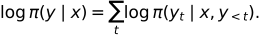
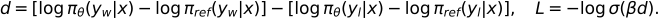

12. 지시 미세튜닝과 선호 학습 — 답변 예시에서 비교 판단까지
지시 미세튜닝(SFT)은 지시를 보고 예시 응답을 이어 쓰는 법을 학습한다. 선호 학습은 같은 질문의 두 응답 중 어느 쪽이 더 좋은지를 이용한다. 둘 다 언어모델을 조정하지만 학습 신호와 손실이 다르다.
전체 학습 경로 · 원문 PDF 195~215쪽 · 선행: CE와 mask
학습 목표는 prompt/response/종료/padding의 역할을 구분하고, 작은 DPO 손실을 계산하며, PPO와 DPO에 필요한 데이터를 비교하는 것이다. SFT가 기본 경로이며 4~5절은 선호 학습 확장이다.
시각적으로 확인할 핵심
위 세 상자는 SFT의 위치 대응, 아래 두 상자는 별도 DPO 예제입니다. 경계선을 기준으로 읽으세요.

SFT는 포함할 정답 위치를, DPO는 reference 대비 응답의 상대 변화를 확인한다.
1. 템플릿은 입력 구조를 일정하게 만든다
데이터의 instruction, 선택적 input, response를 일관된 텍스트나 역할 구분 토큰으로 직렬화한다. 토큰 경계를 알려주는 템플릿은 모델이 어디서 답해야 하는지 배우도록 돕는다. 템플릿을 바꿀 수는 있지만 학습 때와 생성 때의 구조가 크게 다르면 동작이 달라질 수 있다. 원문 197~199쪽의 예는 한 가지 형식이며 모든 모델의 고정 규격이 아니다.
자동 생성한 예시도 정답성·중복·개인정보·실제 작업 적합성을 검토해야 한다. 응답이 길다고 무조건 좋은 학습 예시는 아니다. train/validation 분리 역시 필요하다.
2. 입력에는 남겨도 loss에서는 뺄 수 있다
설명용 ID에서 P0=10,P1=11은 prompt, R0=20,R1=21은 response, EOS=2는 종료, PAD=0은 채움이다. 어휘의 실제 표준 번호가 아니다. next-token 정답은 입력을 한 칸 이동시켜 만든다.
| 위치 | 모델 입력 X | 다음 토큰 정답 Y | 응답만 학습하는 labels |
|---|---|---|---|
| 0 | P0=10 | P1=11 | -100 |
| 1 | P1=11 | R0=20 | 20 |
| 2 | R0=20 | R1=21 | 21 |
| 3 | R1=21 | EOS=2 | 2 |
| 4 | EOS=2 | PAD=0 | -100 |
-100은 이 예에서 loss가 무시하도록 정한 sentinel이며 토큰 ID가 아니다. 응답 첫 토큰 R0의 손실은 마지막 prompt 입력 위치의 출력에서 계산한다. 토큰 위치와 정답 위치를 섞지 않아야 한다. prompt는 모델 입력에 남아 문맥을 제공한다. prompt loss를 제외하는 것은 prompt를 Attention에서 가린다는 뜻이 아니다.
실제 EOS는 예측할 대상이고, 배치 길이를 맞추기 위해 덧붙인 PAD는 보통 loss에서 제외한다. EOS와 PAD가 같은 ID를 공유하는 구현은 값만으로 구별하지 말고 유효 길이나 위치 mask를 이용한다. 전 위치 labels가 무시되면 평균낼 유효 토큰이 없으므로 해당 샘플·배치를 처리하는 규칙이 필요하다. 내부 shift를 하는 API에는 위 X/Y를 중복 shift해 전달하지 않는다.
3. 마스크 세 종류의 질문은 다르다
| 마스크 | 묻는 질문 | 적용 대상 |
|---|---|---|
| causal mask | 미래 위치를 볼 수 있는가? | Attention 점수 |
| padding attention mask | 채움 위치를 읽을 수 있는가? | Attention 참조 |
| loss mask | 이 정답 위치를 평균 손실에 포함하는가? | labels·손실 집계 |
응답만 학습하는 SFT에서 위 표의 유효 정답 확률을 (0.5,0.25,0.8)이라고 놓으면 음의 로그값은 (0.693147,1.386294,0.223144), 평균은 약 0.767528이다. 분모는 입력 길이 5가 아니라 유효 응답·종료 정답 3개다. prompt를 포함해 loss를 계산하는 학습 설계도 가능하므로 응답만 학습하는 것이 정의상 필수는 아니다.
4. PPO 기반 RLHF와 DPO는 어떤 자료가 필요한가
선호 데이터는 같은 prompt x와 선택된 응답 y_w(chosen), 선택되지 않은 응답 y_l(rejected)로 구성할 수 있다. chosen은 평가 기준상 더 선호된다는 뜻이며 객관적으로 항상 옳다는 보장은 없다. 분류의 0/1 라벨이나 한 개의 정답 응답과 구분한다.
PPO 기반 RLHF의 한 경로는 선호 판단으로 보상 모델을 학습하고, 정책 모델이 만든 응답을 보상 모델로 평가해 정책을 갱신하는 것이다. 기준 모델에서 너무 멀어지지 않게 KL 제약·벌점을 둘 수 있다. 보상 모델의 허점을 이용하는 행동과 불안정성 때문에 평가가 필요하다. PPO는 최적화 알고리즘이지 보상 모델 그 자체가 아니다.
DPO는 선호 쌍으로 정책을 직접 학습하며 표준 형태에서는 별도의 학습 보상 모델과 온라인 PPO 루프를 요구하지 않는다. 고정 reference 모델은 여전히 사용한다. ‘보상 모델이 없다’와 ‘기준 모델이 없다’를 혼동하지 않는다. DPO 원논문
5. DPO 식을 작은 숫자로 따라가기
응답 로그확률은 각 토큰을 이전 prompt와 응답 토큰에 조건부로 평가한 로그확률의 합이다. 토큰들이 독립이라서 곱하는 것이 아니라 확률의 연쇄법칙을 쓴다.

표준 DPO에서 아래 d는 reference 대비 chosen의 개선량과 rejected의 개선량 차이다. β>0은 배율이고 σ는 sigmoid다.

설명용으로 chosen의 현재/reference 로그확률을 -2/-3, rejected는 -4/-3으로 놓자. chosen 차이는 1, rejected 차이는 -1, d는 2다. β=0.5이면 βd=1, σ(1)≈0.731059, 손실≈0.313262다. 현재 정책이 reference와 같으면 d=0이고 손실은 ln2≈0.693147이다. chosen의 상대적 점수를 높이는 것이므로 chosen 확률이 어떤 상황에서나 절대 증가한다고 단정하지 않는다. 응답 길이·마스킹·EOS 포함 규칙도 로그확률 집계에 영향을 주므로 일치시킨다.
Bradley–Terry 선호 모형의 P(w 선호)=sigmoid(r_w-r_l)은 점수 차이를 비교 확률로 바꾼다. 관측한 선호에 음의 로그를 취해 학습 손실로 만들 수 있다. 원문 209쪽 ‘확률은 loss로 사용할 수 없음’은 확률에서 목적에 맞는 손실을 구성한다로 보완한다. KL은 대칭 거리나 단순 유사도 점수가 아니라 방향 있는 분포 차이 척도다. 정규화된 P,Q에 대해 D_KL(P||Q)=Σ P log(P/Q)이며, P>0인데 Q=0인 항은 무한대가 될 수 있다.
6. 이해 확인
- 표의 P1 입력 위치에서 계산되는 정답 R0를 prompt loss라는 이유로 제외해도 되는가?
- 응답 2토큰과 실제 EOS, padding 3개라면 위 설계에서 CE 분모는?
- DPO에서 현재 정책=reference이면 한 쌍의 손실은? β를 바꿔도 같은가?
- 두 응답의 토큰확률을 곱할 때 독립성을 가정해야 하는가?
해설과 돌아갈 위치
- 응답만 학습하는 설계에서 R0는 포함한다. 입력과 정답의 한 칸 이동을 고려한다. 2절.
- 3이다. EOS는 종료를 배우는 정답이며 PAD는 제외한다. 2~3절.
- d=0, σ(0)=0.5이므로 ln2≈0.693147이다. 양의 β를 바꿔도 같다. 5절.
- 아니다. 각 토큰의 조건부 확률을 연쇄법칙으로 곱한다. 5절.
204·215쪽은 실습 안내로 보존하며 원 Chapter 7 노트북 실행 결과를 주장하지 않는다. 다음 단계는 13장 추론 모델이다. 응답을 더 오래 생성하는 것과 가중치를 학습하는 것을 계속 구별하자.